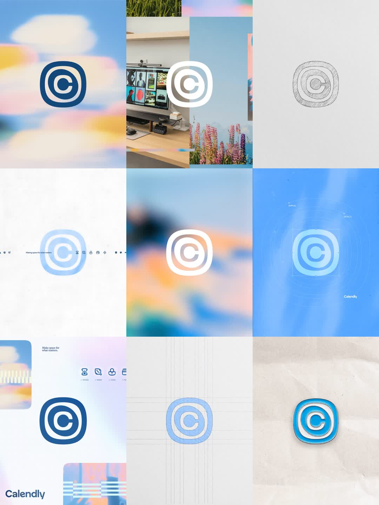

New Calendly logo: a brand-identity reel cycling the new Calendly mark - concentric rounded-square rings forming a 'C' - across dreamlike contexts: navy on blurred pastel skies, white on lifestyle photos, a pencil construction sketch, a blueprint grid, the icon system (hourglass, wave, handshake, calendar), the wordmark lockup with 'Make space for what matters.', and an enamel pin render on paper.

Build a brand reveal reel for a logo system. Sequence 6-8 still scenes, crossfading every 1.5s (200ms overlap) with a slow 2% scale drift per scene: 1) navy concentric-C squircle mark (three nested rounded-square rings, gap breaks at 2 o'clock forming the C) centered on a heavily blurred pastel sky; 2) white knockout over a desaturated photo; 3) pencil sketch (grayscale, hand-hatched strokes); 4) blueprint: cyan mark on #2563EB with thin construction guides, corner ticks, small monospace annotations; 5) icon sheet: 4 line icons in the same stroke language with 10px caps labels; 6) wordmark lockup + tagline; 7) glossy enamel-pin render on paper (soft top shadow). Keep the mark optically centered (slightly above mathematical center) in every scene; same padding ratio throughout.